In order to use gdb to start and control a process, it is necessary to create a codesigning certificate and then use the codesigning tool to tell OS X you trust gdb. Following that it is necessary to restart the taskgated process. It should be possible for someone to improve the installation script to create the certificate, but so far I had failed to make the various openssl commands work properly.
I Hope You Never Use This
Ebe now uses lldb which comes ready to use with the Xcode command line tools and the universal install script takes care of everything. If you do need to generate and certificate and codesign gdb or some other program, as I searched for a solution I eventually wrote a shell script to do this (which I don't need anymore).
Script to Generate a Certificate and Codesign gdb.
#!/bin/sh
make_gdb_cert()
{
printf '%s\n' \
'[ req ]' \
'default_bits = 2048 # RSA key size' \
'encrypt_key = no # Protect private key' \
'default_md = sha512 # MD to use' \
'prompt = no # Prompt for DN' \
'distinguished_name = codesign_dn # DN template' \
'' \
'[ codesign_dn ]' \
'commonName = "gdb-cert"' \
'' \
'[ codesign_reqext ]' \
'keyUsage = critical,digitalSignature' \
'extendedKeyUsage = critical,codeSigning' > template
printf '%s\n' \
'<?xml version="1.0" encoding="UTF-8"?>' \
'<!DOCTYPE plist PUBLIC "-//Apple//DTD PLIST 1.0//EN" "http://www.apple.com/DTDs/PropertyList-1.0.dtd">' \
'<plist version="1.0">' \
'<dict>' \
' <key>com.apple.security.cs.debugger</key>' \
' <true/>' \
'</dict>' \
'</plist>' \
'</pre>' > gdb-entitlement.xml
echo Generating gdb-cert.cer
openssl req -new -newkey rsa:2048 -x509 -days 3650 -nodes -config template \
-extensions codesign_reqext -batch -out gdb-cert.cer -keyout gdb-cert.key
echo Deleting gdb-cert as root
sudo security delete-certificate -c gdb-cert /Library/Keychains/System.keychain
echo Installing gdb-cert.cer as root
sudo security add-trusted-cert -d -r trustRoot -k \
/Library/Keychains/System.keychain gdb-cert.cer
sudo security import gdb-cert.key -A -k /Library/Keychains/System.keychain
echo Killing taskgated
sudo pkill -f /usr/libexec/taskgated
echo Signing gdb executable
codesign --entitlements gdb-entitlement.xml -fs gdb-cert $1
echo Removing generated files
rm template gdb-cert.cer gdb-cert.key
}
make_gdb_cert /usr/local/bin
Just in Case
The simplest way to codesign gdb on OS X (other than the script) is to use the following commands (adapted from http://wiki.freepascal.org):
Starting Keychain Access
Use the Spotlight Search tool (magnifying glass icon in the upper right of your screen) and type in "key" in the search box. You should see Keychain Access highlighted in blue below the search box as in the image below.
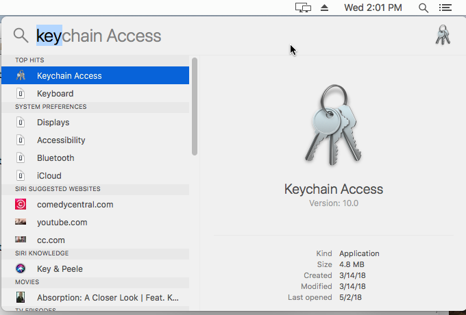Keychain Access
Below you can see the window for Keychain Access.
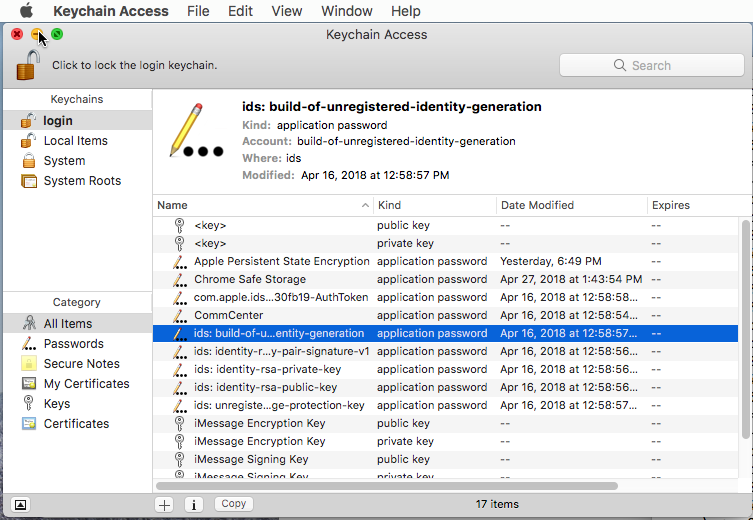Starting the Certificate Creation
Now you need to click on the "Keychain Access" menu item at the top of the screen, then select "Certificate Assistant" and then "Create a Certificate". Click on "Create a Certificate". This will cause a series of forms to popup.
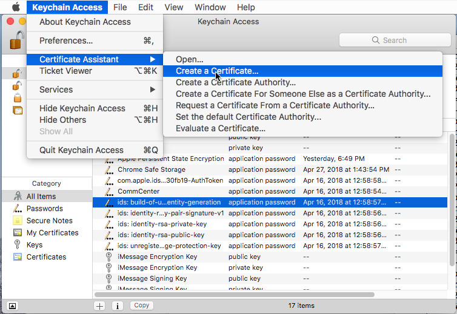Naming the Certificate
Below you see the first of the series of popup forms. Here you need to name the certificate "gdb-cert" to match the ebe install script. You also need to change the certificate type to "Code Signing". Last you need to select "Let me override defaults". In truth the only default to override is the duration for the certificate which is 365 days. I would not wish to repeat this every year.
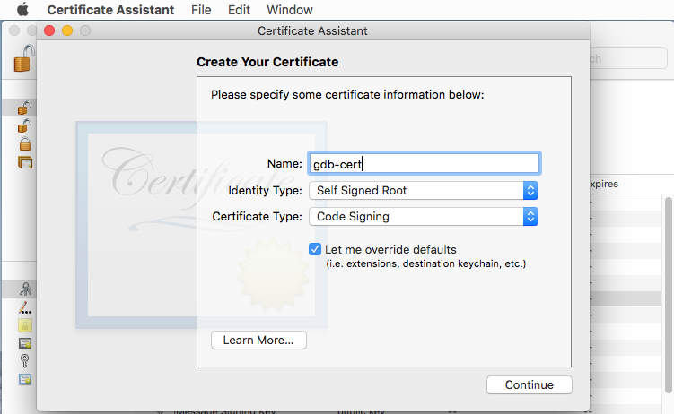Warning about Self-Signing
Keychain Access will popup a warning that you are about to create a self-signed certificate. Just click on "Continue".
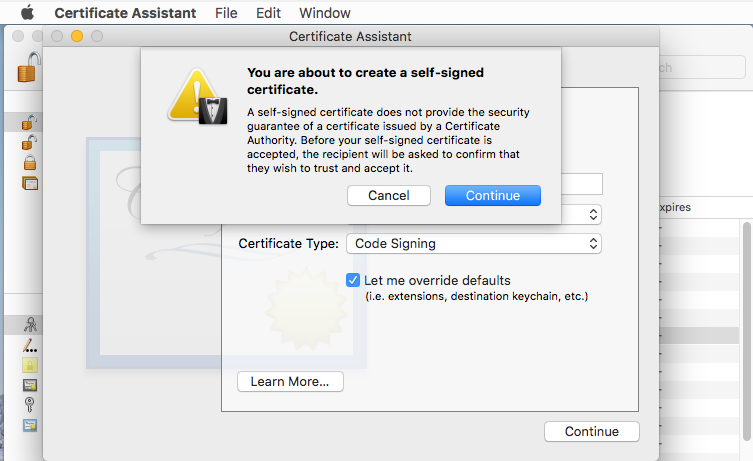Setting Validity Period
The next popup allows you to change the length of time the certificate will be valid. I added a 0 to select 10 years.
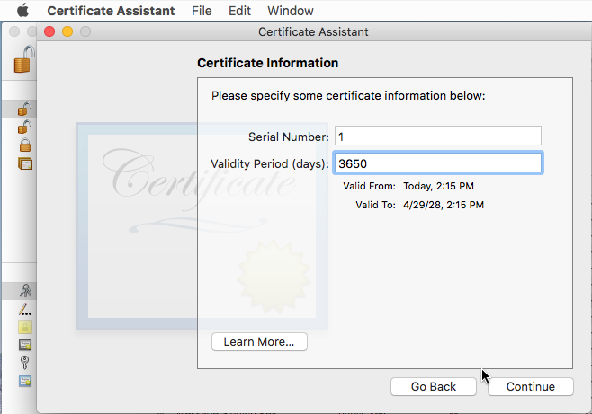Certificate Information
Having set the country code is sufficient. Just click on "Continue".
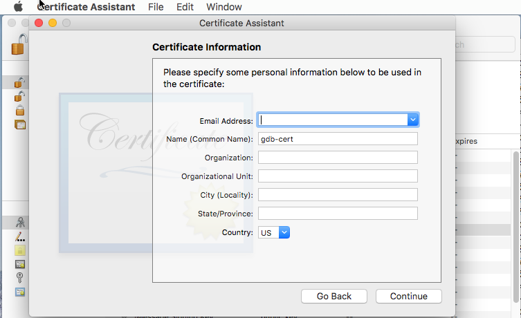Keypair Information
2048 bit RSA seems sufficient for a key pair used on on only one computer. Just click on "Continue".
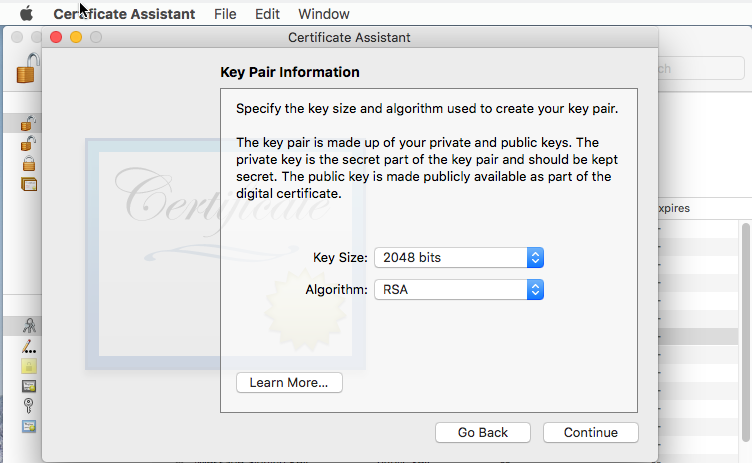Key Usage Extension
I haven't studied what this means. Just click on "Continue".
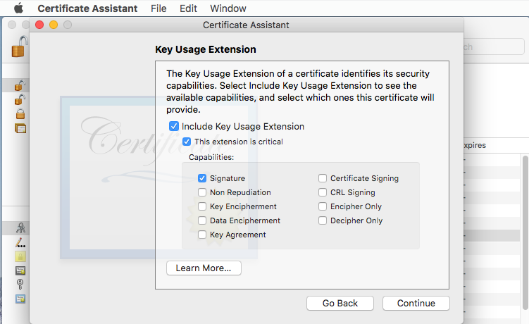Extended Key Usage Extension
I haven't studied what this means though "Code Signing" should be selected. Just click on "Continue".
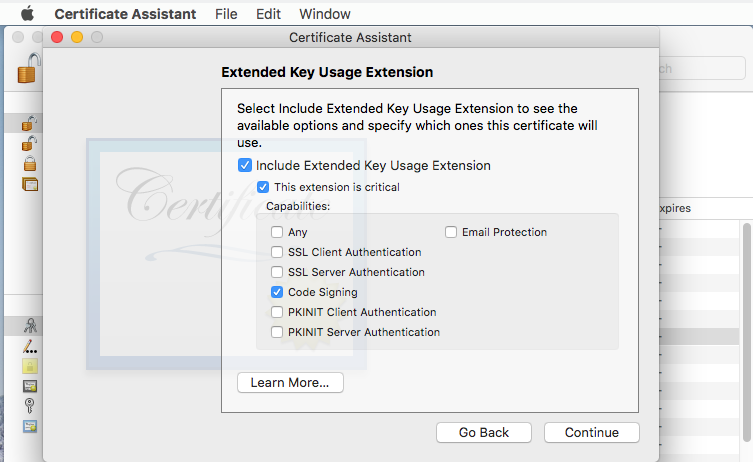Basic Constraints Extension
I haven't studied what this means. Just click on "Continue".
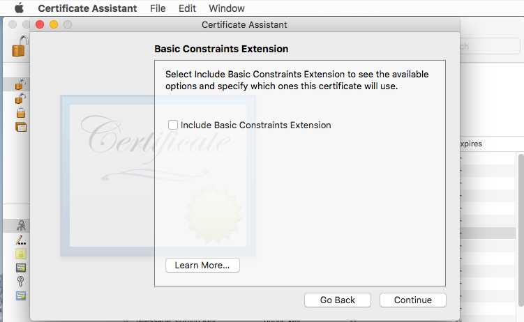Subject Alternate Name Extension
I haven't studied what this means. Just click on "Continue".
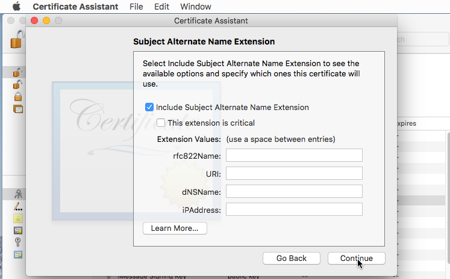Location for Certificate
It looks like you have a choice, but the system keychain always ends with an error. The default is "login" which will work. Just click on "Continue".
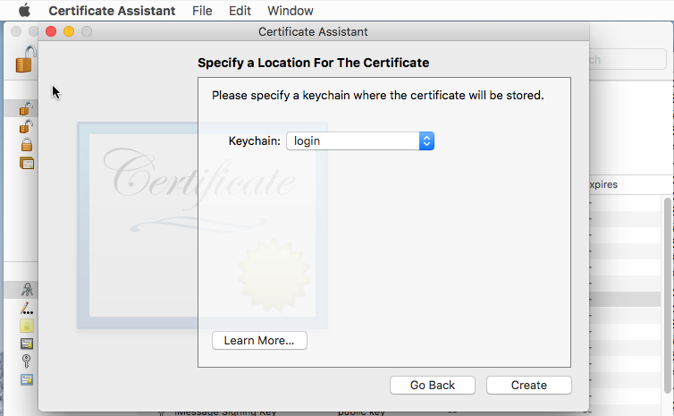Conclusion of Certificate Creation
The certificate is created. Just click on "Done".
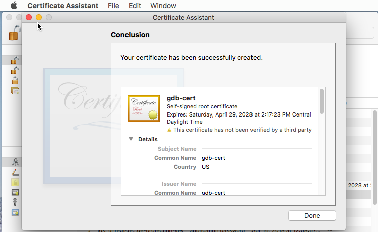Changing Certificate Trust 1
You need to right-click on the gdb-cert certificate, then click on "Get Info". This will bring up information about it and will let you change some thins.
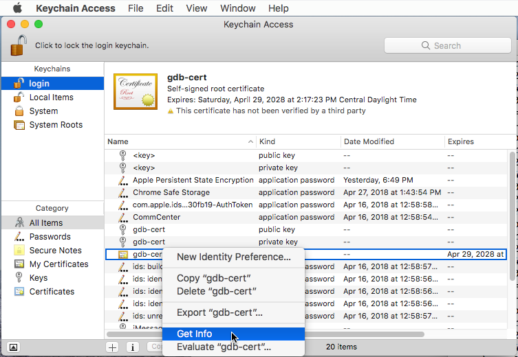Changing Certificate Trust 2
Initially the trust options are hidden. Click on the triangle to the left of "Trust" to expand the trust options. Then you can change them all to "Always Trust" by clicking on the spinner for the "When using this certificate" option.
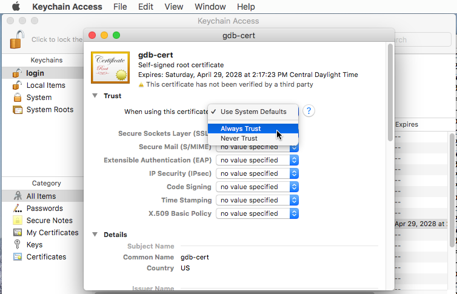Changing Certificate Trust 3
Here we can see the result of changing the trust options. Next you need to close this form by clicking on the red circle in the upper left. This will popup a form for confirmation.
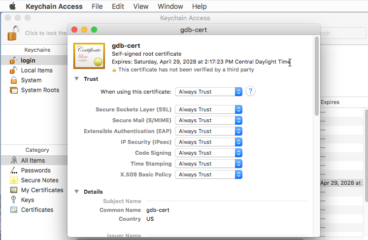Changing Certificate Trust 4
In the confirmation form you must enter your password and click on "Update Settings" before the trust options are actually changed.
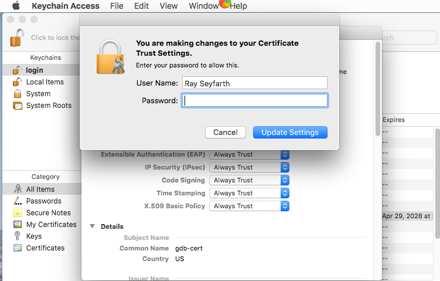Moving the Certificate to the System Chain
I couldn't manage to capture an image of this action, so you will have to use your imagination. All you need to do is drag the gdb-cert item from the main pane of the Keychain Access window to the "System" chain in the left pane which is highlighted with a blue background below. Use a left-click and hold until the "gdb-cert" item is over the "System" keychain. Then it will popup a confirmation form. Enter your password and click on "Modify Keychain".
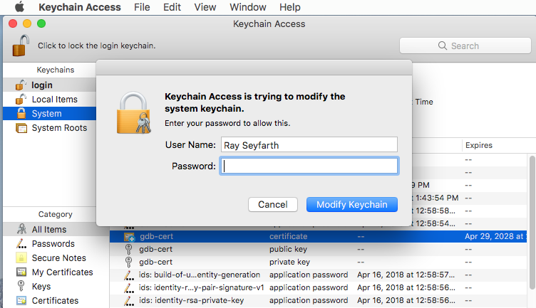System Keychain
Next we see the System keychain is selected in the left pane and the gdb-cert certificate is in the System keychain.
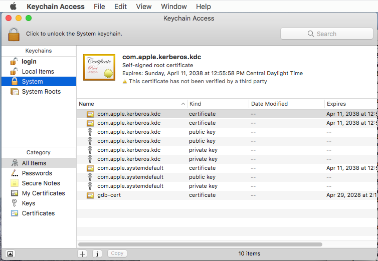Changing Certificate Trust 5
Now with the System keychain selected in the left pane, right-click on the gdb-cert certificate and select "Get Info". Click on "Get Info" and you will see the certificate information. After clicking on the triangle to the left of "Trust" you will see the trust options. Then you need to select "Always Trust" for "When using this certificate". You need to close the info window by clicking on the red circle in the upper left of the info window to force the changes to be made.
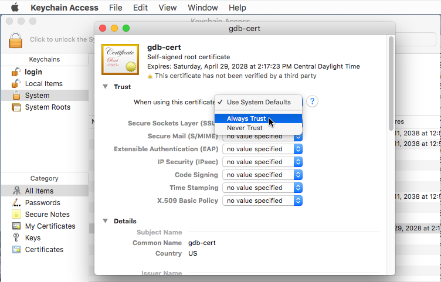Changing Certificate Trust 6
Closing the info window will cause Keychain Access to popup a confirmation window. Enter your password and click "Update Settings".
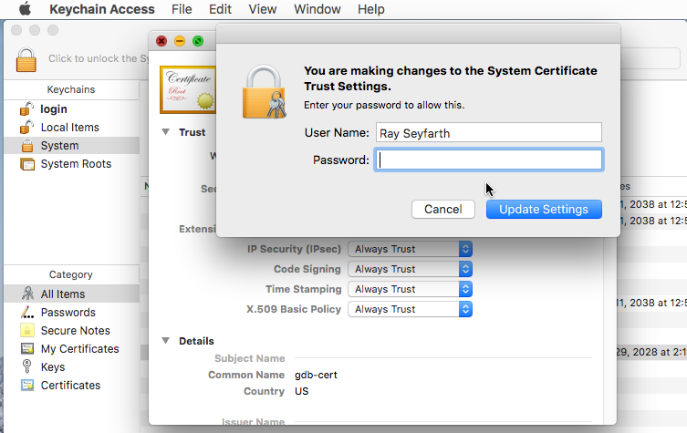Code Signing
If you run the ebe installation script without creating gdb-cert first, it will need to be done later and you will also need to do a couple more commands.
If you used brew:
codesign -s gdb-cert /usr/local/bin/gdb
If you used MacPorts:
codesign -s gdb-cert /opt/local/bin/ggdb
Restarting taskgated
Then you need to restart the taskgated process. Note that codesigning and restarting taskgated are both done by the ebe install script. Just in case:
sudo killall -9 taskgated